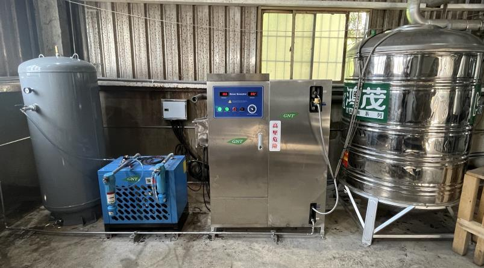

GNT · ENVIRONMENTAL SOLUTIONS讓環境更純淨，
讓環境更純淨，
讓新鮮走得更遠。
從食品加工、冷藏保鮮到生活空間，
銳泰以環境淨化工程，連結每一個需要被守護的日常。
空間淨化水系統應用整廠環境規劃

專注環境淨化。
關注食用、居住與生活品質。
以清潔、安全及生態友好的系統為出發點，銳泰提供環境淨化設備的設計、規劃與應用。
認識銳泰 ↗WHERE WE WORK
找到適合您的應用領域
五大領域，各有專屬的環境課題。
 01
01FOOD PROCESSING
食品加工環境
從原料進廠、加工到包裝出貨，依現場需求規劃空間與用水的環境控制。
深入了解 ↗02COLD STORAGE
冷藏與冷凍庫房
針對蔬果保鮮、儲存環境與庫房異味，規劃適合現場的循環處理方案。
深入了解 ↗ 03
03TRANSPORTATION
汽車與運輸工具
聚焦車室空間、冷氣通風管道與長期使用所累積的氣味問題。
深入了解 ↗ 04
04BUILDINGS & PUBLIC SPACES
居住、飯店、辦公大樓與公共環境
依空間使用型態，整合室內空氣、空調風道與異味處理需求。
深入了解 ↗
05INDUSTRIAL APPLICATIONS
其他應用：廚房、餐廳與工業廢氣
從餐飲油煙排氣到工業廢氣，依處理需求設計除味淨化系統。
深入了解 ↗環境空氣過濾 · 轉換 · 環境控制
GNT循環處理